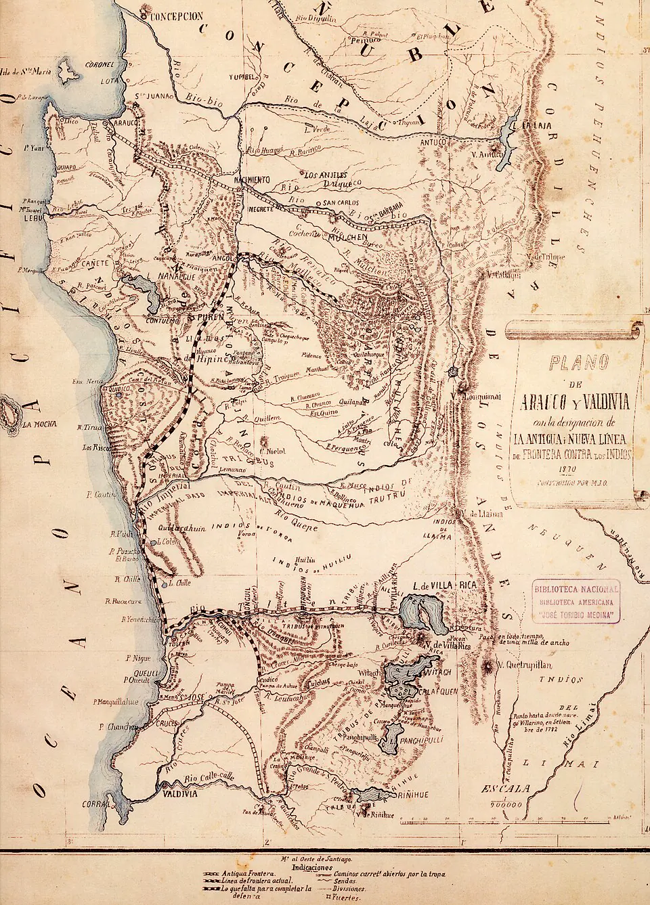

Ocupación de la Araucanía

Desde el Parlamento de Quilín (1641), el Río Biobío funcionó como frontera entre la sociedad hispano-criolla y el territorio mapuche autónomo, el Wallmapu. A mediados del siglo XIX, el Estado chileno quiso incorporar esas tierras fértiles y afirmar su soberanía. En 1861 el coronel Cornelio Saavedra propuso avanzar la frontera, y desde 1862 se fundaron fuertes y pueblos como Angol, Mulchén y Lebu. La época la llamó "Pacificación de la Araucanía"; hoy se usa "Ocupación de la Araucanía".
Los mapuche resistieron: entre 1868 y 1871 el lonko Kilapán encabezó la lucha de los arribanos, y en 1881 hubo un alzamiento general. Tras la Guerra del Pacífico, el ejército fundó Temuco (1881) y refundó Villarrica el 1 de enero de 1883, fecha que marca el fin de la campaña.
Las leyes declararon fiscales las tierras consideradas desocupadas, que el Estado remató o entregó a colonos chilenos y europeos. Entre 1884 y 1929 se otorgaron títulos de merced que confinaron a las comunidades en reducciones, una fracción mínima de su territorio. Para el pueblo mapuche fue una pérdida territorial, económica y cultural profunda, que explica muchas demandas actuales de restitución de tierras.
Versión para niños
Por siglos, las tierras al sur del río Biobío fueron el hogar libre del pueblo mapuche, que las llama Wallmapu. Entre 1861 y 1883, el Estado de Chile envió a su ejército, construyó fuertes y fundó ciudades como Temuco. El gobierno de entonces lo llamó "Pacificación". Los mapuche, con líderes como Kilapán, defendieron su territorio. Al final perdieron la mayor parte de sus tierras y tuvieron que vivir en espacios pequeños, llamados reducciones. Muchas comunidades todavía piden que se les devuelvan.
Para maestros
Nivel sugerido: 1° medio
Objetivo: Analizar la Ocupación de la Araucanía desde la perspectiva del Estado chileno de la época y desde la del pueblo mapuche, comprendiendo sus consecuencias territoriales y sociales hasta hoy. El rango 1861–1883 va desde el plan de Cornelio Saavedra hasta la refundación de Villarrica; conviene señalar que, en paralelo, Argentina ocupó el territorio mapuche al oriente de los Andes.
Preguntas para la clase:
- ¿Qué razones dio el Estado chileno para ocupar la Araucanía y qué intereses económicos había detrás?
- ¿Qué cambió para las familias mapuche con el sistema de reducciones y títulos de merced?
- ¿Por qué hoy se prefiere decir "Ocupación" y no "Pacificación"? ¿Qué muestra ese cambio de palabras?
Actividad (20–30 min): Los estudiantes comparan dos mapas: el territorio mapuche antes de 1861 y la distribución de los títulos de merced. En parejas escriben un texto breve desde la perspectiva de un funcionario del Estado en 1880 y otro desde la de una familia mapuche radicada en una reducción. Cierre con una discusión sobre las diferencias y sobre las demandas actuales.
Fuentes sugeridas: Memoria Chilena; Biblioteca Nacional Digital; Museo Regional de la Araucanía; Informe de la Comisión Verdad Histórica y Nuevo Trato con los Pueblos Indígenas.
Objetivos de Aprendizaje (Currículum Nacional)
- 6° básico · HI06 OA 05 Describir cómo se conformó el territorio de Chile durante el siglo XIX … la ocupación de la Araucanía
- 1° medio · HI1M OA 14 Explicar que la ocupación de la Araucanía fue una política de Estado que afectó profundamente a la sociedad mapuche
- 1° medio · HI1M OA 24 Evaluar … las relaciones de conflicto y convivencia con los pueblos indígenas (aymara, colla, rapa nui, mapuche, quechua, atacameño, kawéskar, yagán, diaguita)
Personajes
Revisión humana pendiente. Cómo se revisa · Reportar un error
Cómo citar: Historia de Chile. (2026). Ocupación de la Araucanía. En Historia de Chile: atlas y línea de tiempo. https://moises-salgado.github.io/historia-de-chile/momento/ocupacion-de-la-araucania.html